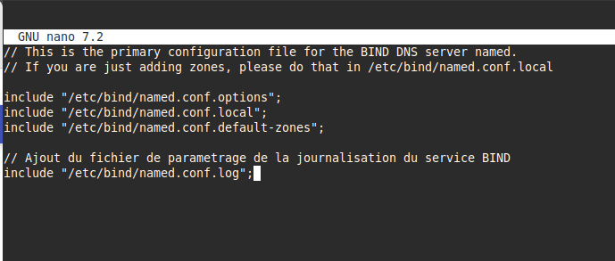
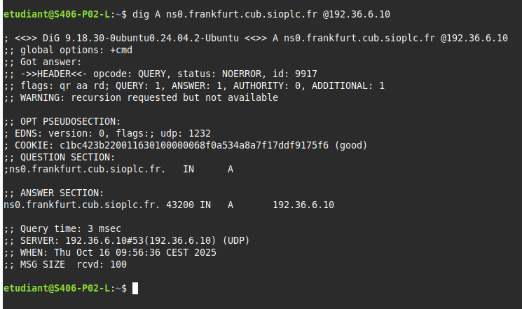

Situation1 - AdminServ - CUB¶

Mise en place de serveurs DNS au sein de l’entreprise CUB¶
Présenté par : Joris Texier
Date de rédaction : 2 octobre 2025
Version : 1
Sommaire¶
- Étape 1
- Schéma réseau logique et fonctionnement du service DNS
- Explication du fonctionnement du DNS interne
- Étape 2
- Mise en place du service DNS resolver (Unbound)
- Mise en place du service DNS faisant autorité (Bind9)
- Délégation de zone
- Tests de fonctionnement
Étape 1¶
a) Schéma réseau et fonctionnement du DNS¶
À partir du schéma réseau logique initial réalisé les semaines précédentes, un nouveau schéma est proposé incluant le fonctionnement du service DNS au sein de l’entreprise.
Les éléments à prendre en compte :
- Une continuité de service doit être proposée pour le service DNS récursif (hébergé dans le VLAN production).
- Une continuité de service doit être proposée pour le service DNS faisant autorité sur le domaine
frankfurt.cub.sioplc.fr(hébergé dans le VLAN DMZ).
b) Explication du fonctionnement DNS¶
Le fonctionnement du DNS dans l’entreprise CUB repose sur une architecture hiérarchisée entre un DNS récursif interne (resolver) et un DNS faisant autorité.
Exemple : une machine cliente souhaite obtenir l’adresse IP correspondant au nom ns1.frankfurt.cub.sioplc.fr.
Le processus est le suivant :
- La machine cliente envoie la requête DNS au serveur récursif interne.
- Si l’adresse demandée n’est pas en cache, le serveur contacte un serveur DNS racine.
- Celui-ci renvoie la délégation vers les serveurs autoritaires du domaine
cub.sioplc.fr. - Le serveur récursif obtient la réponse finale et la renvoie au client.
Étape 2¶
a) Mise en place du service DNS resolver (Unbound)¶
Vérification préalable¶
sudo apt update && sudo apt upgrade
Installer le service de journalisation rsyslog pour disposer de logs clairs dans /var/log :
sudo apt install rsyslog
Définir les paramètres réseaux du serveur¶
sudoedit /etc/network/interfaces

Définir le serveur DNS récursif à utiliser¶
sudoedit /etc/resolv.conf
nameserver 8.8.8.8
Une fois le service Unbound opérationnel, remplacer 8.8.8.8 par 127.0.0.1 et ajouter le second serveur récursif (192.168.6.10).
Prendre en compte les modifications¶
systemctl restart networking
Configurer les fichiers d’identité du serveur¶
sudoedit /etc/hostname
dns1
sudoedit /etc/hosts
sudo shutdown -r now
Installation d’Unbound et des outils¶
sudo apt install unbound dnsutils tcpdump tmux curl
Configuration d’Unbound¶
sudoedit /etc/unbound/unbound.conf
sudo unbound-checkconf

Téléchargement du fichier racine :
sudo curl --output /var/lib/unbound/root.hints https://www.internic.net/domain/named.cache
sudo chown -R unbound:unbound /var/lib/unbound/
Création du fichier de log :
sudo touch /var/log/unbound.log
sudo chown unbound:unbound /var/log/unbound.log
sudo systemctl restart unbound
sudo systemctl status unbound
Sécurisation AppArmor¶
sudoedit /etc/apparmor.d/usr.sbin.unbound
# Autoriser le daemon à lire et écrire dans /var/log/unbound.log
/var/log/unbound.log rw,
sudo apparmor_parser -r /etc/apparmor.d/usr.sbin.unbound
sudo systemctl restart apparmor
Observation des logs :
sudo cat /var/log/unbound.log
sudo tail -f /var/log/unbound.log
Test de bon fonctionnement¶
(Insérer capture ou résultat du test Unbound ici)
b) Mise en place du service DNS faisant autorité (Bind9)¶
Ce service s’exécute dans le VLAN DMZ (VLAN 76) et gère le domaine frankfurt.cub.sioplc.fr.
Vérification préalable¶
sudo apt update && sudo apt upgrade
sudo apt install rsyslog bind9 dnsutils
Paramètres réseaux¶
sudoedit /etc/network/interfaces
sudoedit /etc/resolv.conf
nameserver 9.9.9.9
sudo systemctl restart networking

Configuration des fichiers d’identité¶
sudoedit /etc/hostname
ns1
sudoedit /etc/hosts
sudo shutdown -r now
Exemple de configuration Bind9 (esclave)¶
sudoedit /etc/bind/named.conf.local
sudo touch /var/cache/bind/db.frankfurt.cub.sioplc.fr
sudo chown bind:bind /var/cache/bind/db.frankfurt.cub.sioplc.fr

Mise en place de la journalisation¶
sudoedit /etc/bind/named.conf.log
sudo touch /var/log/bind.log
sudo chown bind:bind /var/log/bind.log
sudoedit /etc/bind/named.conf


Configuration AppArmor :
sudoedit /etc/apparmor.d/usr.sbin.named
# Autoriser le daemon Bind 9 à lire et écrire dans /var/log/bind.log
/var/log/bind.log rw,
sudo apparmor_parser -r /etc/apparmor.d/local/usr.sbin.named
sudo systemctl restart apparmor
sudo named-checkconf -z
sudo systemctl restart bind9
sudo systemctl status bind9

TEST¶
Cette commande permet de tester la résolution DNS d’un domaine précis :
nslookup ns0.frankfurt.cub.sioplc.fr 192.36.6.10
Résultat attendu :
- ns0.frankfurt.cub.sioplc.fr → 192.36.6.11 (esclave)
- ns1.frankfurt.cub.sioplc.fr → 192.36.6.10 (maître)


Délégation de zone¶
Connexion SSH au serveur maître parent¶
ssh admin@192.36.250.10
Modification du fichier de zone du domaine parent¶
sudoedit /var/cache/bind/db.cub.sioplc.fr
Ajouter à la fin du fichier :
frankfurt IN NS ns1.frankfurt.cub.sioplc.fr.
ns1.frankfurt IN A 192.36.6.11
Vérifier et recharger la configuration :
sudo named-checkconf -z
sudo systemctl reload bind9